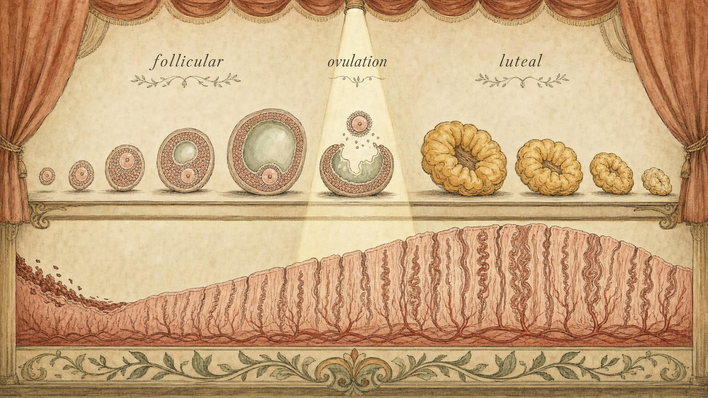
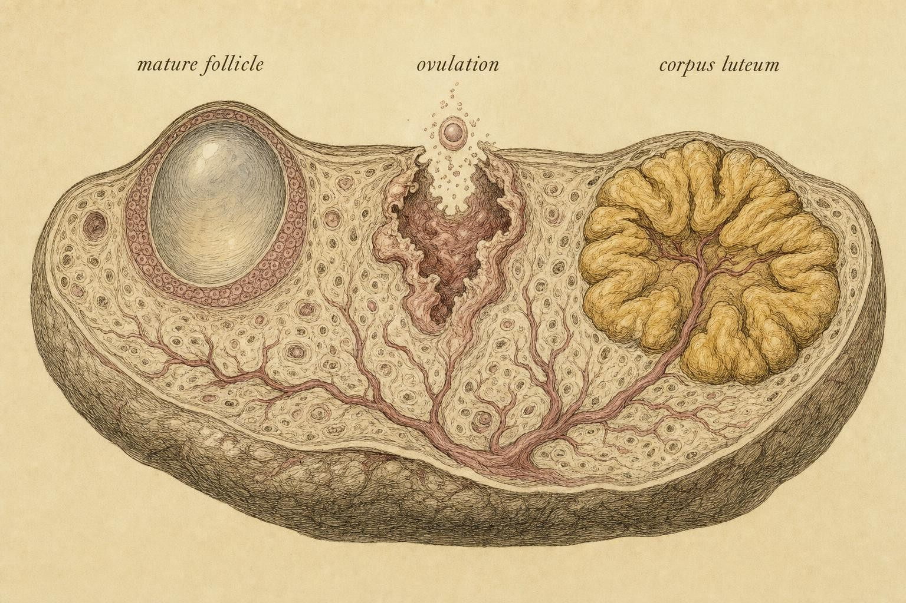

One Cycle, Two Acts, One Pivot
Reading the menstrual cycle as a story your feedback logic already predicts.
Imagine you are handed two numbers about the same person: their cycle was 26 days long in March and 34 days long in June. Nothing is wrong. Most of that eight day swing happened in the first half of the cycle, before ovulation, while the second half barely moved at all. If you can explain why, you already understand the single most useful asymmetry in reproductive physiology, and you will avoid the most common mistakes people make about fertile windows, about what an app should be allowed to flag as abnormal, and about what actually counts as a normal cycle in the first place.
Throughout this chapter you will follow one learner, Naledi, a 29 year old recreational runner who started charting her cycle after a training app promised to predict her fastest training days from her hormones. Her first three charted cycles ran 25, 33, and 27 days, and the app flagged every single one of them as irregular, with a small red exclamation mark that made her worry something in her body had gone wrong. Naledi is not a patient in this course and she is not a case to be solved. She is a stand in for an extremely common experience: watching a number swing and assuming that swing means dysfunction. By the end of this chapter you will be able to read her three numbers more precisely than the app that alarmed her, and you will understand exactly why a lay algorithm built on a single average gets a real body wrong. Her story is a thread we return to, not a diagnosis, and we will be careful about that difference the whole way through.
Last class you learned the feedback loop that connects the hypothalamus, the pituitary gland, and the ovary, the small relay of signals sent back and forth like a conversation. This class we set that loop in motion and watch it produce an actual cycle, hormone by hormone, day by day. The reward is fluency. By the end you should be able to walk through a full cycle from memory and predict how a shift in any one hormone reshapes the whole timeline, which is exactly the skill Naledi's app was trying, and largely failing, to fake with a single number.
The cast, refreshed in one minute
Before we start the story, a quick refresh of the players, because the rest of the chapter assumes you can hold them all in your head at once and picture how they talk to each other across the body.
The hypothalamus releases gonadotropin-releasing hormone (abbreviated GnRH) in pulses. Those pulses tell the pituitary gland to secrete two messengers: follicle-stimulating hormone (abbreviated FSH) and luteinizing hormone (abbreviated LH). Both act on the ovary. In response, the ovary produces two steroid hormones you will track all chapter: estradiol (the main estrogen of the reproductive years) and progesterone. Those two ovarian hormones feed back to the brain, sometimes turning it down and, at one dramatic moment, turning it up.
One detail from last class is worth restating here because it resurfaces constantly this chapter. GnRH does not arrive at the pituitary gland as a steady drip. It arrives in discrete pulses, and the pituitary reads the frequency of those pulses almost as carefully as it reads their size. Slower, more widely spaced pulses tend to favor the release of follicle-stimulating hormone. Faster, more closely spaced pulses tend to favor luteinizing hormone. You do not need to memorize the wiring behind that difference to use this chapter, but you do need to remember that the difference exists, because it is a large part of why the two halves of the cycle feel hormonally distinct even though the same two letters, FSH and LH, are technically present in both.
That is the whole cast. The cycle is simply what happens when this small loop runs across roughly a month, and it divides cleanly into two acts joined by one pivot: a follicular phase that recruits and ripens a single follicle, an ovulatory surge that releases the egg it contains, and a luteal phase that transforms the emptied follicle into a temporary hormone factory and then decides, based on a single piece of incoming information, whether to keep the whole system running or let it reset.

The cycle as two acts joined by a single pivot." data-image-idx="0" style="display:block;max-width:100%;max-height:75vh;height:auto;width:auto;margin:0 auto;cursor:pointer;">Act one: the follicular phase
The first act begins on the day bleeding starts, which by convention is day one of the cycle. At this moment estradiol and progesterone are both low, and that low is not a pause in the story, it is itself a signal. With little estrogen restraining the brain, follicle-stimulating hormone climbs. This early FSH rise is the opening move of the entire cycle, and according to Mihm, Gangooly, and Muttukrishna (2011), every normally cycling woman shows this same luteal to follicular transition rise regardless of exactly how long her individual cycle turns out to run.
FSH does exactly what its name promises: it stimulates follicles. Each ovary carries a reserve of small, fluid filled structures called antral follicles, each one housing an immature egg suspended mid development. The FSH rise recruits a cohort of these antral follicles into an active growth phase. Interestingly, the older idea that a single tidy cohort is recruited once per cycle and nothing else happens has given way to a more complex picture. Reviewing more than two hundred studies, Baerwald, Adams, and Pierson (2011) concluded that antral follicles actually develop in overlapping waves across the cycle, most commonly two waves and sometimes three, with typically only one of those waves producing the follicle that goes on to ovulate. For your purposes the practical takeaway is simpler than the underlying wave physiology: FSH gets multiple follicles growing at once, and only one of them is destined to finish the job.
The two cell system behind the estrogen rise
It helps to know, at least in outline, where the estradiol in this act actually comes from, because the mechanism is elegant and it explains a detail you will need again in the luteal phase. Each growing follicle contains two cooperating cell layers. An outer layer of theca cells responds to luteinizing hormone by converting cholesterol into androgens, the same broad hormone family that includes testosterone. An inner layer of granulosa cells, which line the fluid filled cavity around the egg, responds to follicle-stimulating hormone by taking up those androgens and converting them into estradiol through an enzyme called aromatase. Neither cell layer can make estradiol alone. The theca cells have the raw material but not the converting enzyme in useful quantity, and the granulosa cells have the enzyme but not direct access to enough raw material without the theca layer's help. This division of labor is sometimes called the two cell, two gonadotropin system, and it is worth remembering because it means a follicle's estradiol output is really a joint product of two separate signals, LH and FSH, arriving on two separate cell populations at once. When you understand this cooperation, the follicular phase stops looking like a single hormone rising in isolation and starts looking like what it actually is, a small, self-organizing factory that only runs when both inputs are present.
As the recruited follicles grow, their granulosa cells also secrete a hormone called inhibin B, which selectively suppresses FSH without touching LH (Mihm et al., 2011). This is the first act of pruning. As FSH availability dips, most of the recruited follicles cannot keep growing on the shrinking supply, and they stall and eventually die off in a process called atresia. One follicle, typically the one that is most sensitive to FSH and has built the richest blood supply for itself, keeps growing anyway even as its neighbors fall behind. This is the dominant follicle, and it is selected around the middle of the follicular phase (Reed and Carr, 2018; Baerwald et al., 2011). Selection is a genuinely competitive process. The follicles are, in a real sense, racing each other for a shrinking pool of stimulation, and only the fittest contender survives it.
From selection onward, the dominant follicle becomes an estradiol factory almost on its own, since it now has the richest supply of both LH driven androgen and FSH driven aromatase activity in the ovary. Across the week before ovulation, estradiol climbs steeply, and its rise is no longer gradual, it accelerates. Several things happen in parallel as a result, and each one matters for practice. In the uterus, rising estradiol drives the lining, called the endometrium, to thicken and proliferate, rebuilding the tissue that was shed during the menstrual bleed that opened this act. At the cervix, rising estradiol changes the character of the mucus produced there, making it thinner, clearer, and more stretchable, a quality classically described as spinnbarkeit, so that it becomes easier for sperm to travel through around the time of ovulation rather than acting as a barrier (Owen, 1975). And in the brain, that same rising estradiol is quietly setting up the single most elegant event in the whole cycle, the pivot you will meet in the next section.
Why this act refuses to keep a schedule
Here is the theme that will return all course long. The follicular phase is where cycle length is decided, because the time it takes to recruit, prune, and ripen a dominant follicle is genuinely variable from one cycle to the next, even within the same body. Anything that nudges FSH availability or follicle sensitivity, and that includes ordinary life stress, illness, travel across time zones, poor sleep, and shifts in how much energy is available relative to what training and daily life demand, tends to lengthen or shorten this act. This is almost certainly what happened in Naledi's three charted cycles. A follicular phase that runs a few days long in a demanding training block and a few days short in an easy recovery week is not a malfunction her app should be flagging with an exclamation mark, it is the follicular phase behaving exactly the way healthy follicular phases behave. The second act, as you will see, does not have nearly that same freedom to stretch and compress.
It is worth separating two ideas that get blurred together constantly outside a course like this one: how many follicles are recruited into growth this month, and how many eggs remain in reserve overall. Every cycle draws down a small number of antral follicles from a much larger, slowly shrinking reserve that was largely set before birth, and the vast majority of any given cohort is never destined to ovulate regardless of how healthy the cycle is. Losing follicles to atresia every single month is not a sign that something is going wrong, it is the ordinary cost of running the selection process described above. A low visible antral follicle count on a given scan, or a cycle that recruited a smaller cohort than usual, is a separate question from whether ovulation itself will happen on schedule, and conflating the two is a common source of unnecessary alarm.
The pivot: an estradiol-triggered surge
This is the single most elegant moment in the cycle, and it is where last chapter's feedback logic pays off in full. Throughout most of the cycle, estradiol suppresses the brain. This is negative feedback: more estradiol, less GnRH, less LH. But when estradiol is not just high but high and sustained, the sign of that feedback flips entirely. It becomes positive feedback: estradiol now drives the brain to release a large burst of GnRH, which triggers a massive spike of LH, along with a smaller, less dramatic co-rise in FSH. That spike is the LH surge, and it is the pivot on which the whole cycle turns.
How high, and for how long? The classic threshold is instructive. Estradiol must exceed roughly 200 picograms per milliliter and stay above that level for about fifty hours to flip the switch (Reed and Carr, 2018). This is why a single tall estradiol reading taken on one day is not enough to trigger anything on its own. The system is not measuring a peak, it is measuring a sustained state, which is a far more reliable signal that a follicle is genuinely mature and ready than any single snapshot could be.
The mechanism connecting estradiol to the surge is worth naming because it dissolves what would otherwise look like a mystery. Kauffman (2022) reviews the neuroendocrine circuitry behind this switch and points to a population of kisspeptin neurons in the hypothalamus as the intermediary that converts rising, sustained estradiol into the GnRH surge. These neurons sit upstream of the GnRH-releasing cells themselves and appear to function as the actual site where the feedback sign flips from negative to positive. The same review notes a circadian component to this switch, meaning the surge is not purely estradiol-gated, it is also biased by time of day, which is one small reason surge timing has some natural wobble to it even in an otherwise textbook cycle.
Once the surge fires, it sets off a cascade inside the dominant follicle that is worth walking through, because ovulation is not a passive popping open, it is an active, enzyme-driven event. LH acting on the follicle triggers a local release of proteolytic enzymes and prostaglandins that digest and weaken the follicular wall at one specific point. At the same time, the egg itself resumes a process of division called meiosis that had been arrested since before birth, completing its first meiotic division and extruding a small structure called the first polar body, so that by the time of rupture the egg is a genuinely different, more mature cell than it was the day before. When the weakened wall finally gives way, the egg and its surrounding cluster of cells are released, not violently ejected but gently extruded, to be caught by the finger-like projections at the end of the fallopian tube.
Notice, too, that the co-rise in follicle-stimulating hormone at the same moment is not a stray signal without a purpose. A small periovulatory FSH bump helps recruit the very next wave of antral follicles that will eventually compete for dominance in a future cycle, even while the current cycle's dominant follicle is being released. The system is, in effect, already seeding its own next round before the present round has finished, which is one more reason the ovary is better understood as a continuously running process than as a series of isolated, unconnected months.
Two points of practical fluency follow from this. First, the surge is a consequence, not an independent event you must memorize in isolation. It happens because estradiol crossed a sustained threshold, so if you know the shape of the estradiol trace, you can anticipate the surge before it happens. Second, ovulation follows the surge with a real lag. The follicle does not release the egg the instant LH spikes. Rupture occurs roughly a day to a day and a half after the surge begins. Understanding that lag is the difference between a good prediction and a lucky guess, which is exactly what the next widget lets you practice.
Act two: the luteal phase
After the surge fires and the follicle ruptures, the story does not end, it transforms. The emptied follicle does not simply close up and disappear. Its residual cells, the granulosa and theca cells that only a day earlier were cooperating to make estradiol, undergo a rapid structural change called luteinization and reorganize into a temporary hormone-producing gland called the corpus luteum, which is Latin for yellow body, named for its distinctive color (Niswender et al., 2000). This structure is the engine of the second act, and it exists for one purpose and one purpose only.
Niswender and colleagues (2000) describe the mature corpus luteum as containing at least two distinct working cell types, inherited from the two follicular cell layers that formed it. Small luteal cells, descended from the theca layer, respond directly to LH by ramping up progesterone output through a fast internal signaling pathway. Large luteal cells, descended from the granulosa layer, produce even more progesterone on their own and, importantly, carry the receptors that will eventually receive the signal that ends the corpus luteum's life. Together these two cell types make the corpus luteum the single most productive progesterone source in the body during the second half of the cycle.
Progesterone takes the estradiol-thickened lining and finishes it, converting a merely proliferated endometrium into a secretory one: glands that actively secrete nutrients, a supportive stroma rich in glycogen, and a receptive surface prepared for a possible embryo (Tesarik et al., 2020; Niswender et al., 2000). But progesterone's reach extends well beyond the uterus, and two of its other effects are worth knowing because they resurface directly in the next chapter of this course. At the cervix, progesterone reverses the estrogen-driven changes from act one, thickening the mucus back into a scant, sticky barrier. In the hypothalamus, progesterone has a mild thermogenic effect, nudging the body's temperature set point upward by a few tenths of a degree for the remainder of the luteal phase, which is the physiological basis for basal body temperature as a marker of ovulation having already occurred, a signal you will learn to read properly soon. And back at the level of the brain, progesterone slows GnRH pulse frequency, which keeps the loop quiet and prevents a new follicular wave from ramping up while the current cycle's outcome is still pending.
The corpus luteum is also, gram for gram, one of the most richly vascularized structures the body builds and then dismantles inside of two weeks. Because progesterone is made from cholesterol delivered by the bloodstream rather than stored in advance, the luteal cells need an unusually dense capillary network to keep pace with their own output, and that vascular growth happens with striking speed once luteinization begins. This detail matters clinically as well as conceptually. Tesarik and colleagues (2020) note that in assisted reproductive technology, where ovulation is often triggered artificially and the normal LH support pattern is disrupted by the medications used to prevent premature ovulation, the corpus luteum frequently ends up under-supported, a condition called luteal phase deficiency, which is why fertility treatment protocols routinely include supplemental progesterone or additional LH-like support after egg retrieval. That clinical workaround only makes sense once you understand what the corpus luteum is doing under normal, unmedicated conditions in the first place, which is precisely the physiology this chapter has just walked through.
There is a crucial dependency here that surprises people the first time they encounter it. The corpus luteum needs continued LH to survive. It is not self-sustaining, and it cannot simply run on its own momentum once it forms. LH from the pituitary gland maintains its structural integrity and its progesterone output for as long as it lasts (Niswender et al., 2000; Tesarik et al., 2020). This single dependency, the corpus luteum's reliance on a signal it does not control, sets up the fork in the road that decides how the entire cycle ends.
The fork: rescue or regression
If pregnancy does not occur, the corpus luteum has a built-in lifespan. After roughly two weeks it undergoes luteolysis, a programmed regression rather than a slow fade. Niswender and colleagues (2000) note that in most non-primate mammals this regression is driven by a uterine signal, but in primates the trigger appears to be ovarian in origin, likely a local prostaglandin, though the exact pathway in humans is still not completely settled. What is well established is the outcome: the luteal cells undergo a form of programmed cell death, progesterone and estradiol fall sharply, the endometrium loses its hormonal support, its blood vessels constrict and spasm, and the lining is shed. That shedding is menstruation, and its arrival marks day one of the next cycle. The fall in ovarian hormones also releases the brake on FSH, which is why follicle-stimulating hormone is already climbing again as bleeding starts, closing the loop and reopening it in the same motion.
If pregnancy does occur, the outcome flips entirely. The developing embryo's outer layer, once it implants in the freshly prepared endometrium, secretes human chorionic gonadotropin (abbreviated hCG), a hormone that is structurally similar enough to LH to bind the same receptor and effectively rescue the corpus luteum from its scheduled regression (Tesarik et al., 2020). The rescued corpus luteum keeps producing progesterone, the lining is maintained rather than shed, and menstruation does not come. This is, incidentally, the hormone that home pregnancy tests detect, which is why a positive test is really a positive read on a message the embryo itself is sending to keep the corpus luteum alive. The corpus luteum does not have to carry this responsibility indefinitely. Over the following weeks the placenta develops its own capacity to produce progesterone directly, and around seven to ten weeks into a pregnancy a transition called the luteal-placental shift occurs, after which the placenta has taken over progesterone production and the corpus luteum is no longer essential to maintaining the pregnancy.

One structure, three stages: follicle to rupture to corpus luteum." data-image-idx="1" style="display:block;max-width:100%;max-height:75vh;height:auto;width:auto;margin:0 auto;cursor:pointer;">The asymmetry, quantified
Now we can be precise about the swing you met in the opening, and about the swing that alarmed Naledi's app. Why did most of that variation live in the first act rather than the second?
This asymmetry is not a recent discovery. Owen (1975), in one of the earliest syntheses of hormone assay data mapped onto the physical changes of the cycle, already described the basic shape: estrogen rises through the follicular phase while other hormones stay low, an LH and FSH surge accompanies falling estrogen at ovulation, and progesterone together with estrogen then characterizes a luteal phase that ends in menstruation. That description, half a century old, still holds up because the underlying biology has not changed, only the precision of our measurements has.
The classical teaching, still a useful anchor, is that the luteal phase is roughly constant at about fourteen days while the follicular phase ranges from about ten to sixteen days, so total cycle length variation comes mostly from the follicular side (Reed and Carr, 2018). The reason is structural, and it follows directly from everything in this chapter. Follicle recruitment and ripening is a competitive, feedback-sensitive process that can genuinely take longer or shorter depending on how quickly a dominant follicle emerges from the pack. The corpus luteum, by contrast, is a gland with a built-in clock ticking down from the moment it forms, so its lifespan is far more constrained by its own internal biology than by outside circumstances.
Large modern datasets sharpen this considerably, and here honesty about the evidence matters as much as the headline finding. Analyzing more than six hundred thousand cycles from a fertility-tracking application, Bull and colleagues (2019) found that when cycles were longer, the follicular phase stretched by up to sixty-six percent while the luteal phase extended by only about five percent. That is the asymmetry made quantitative: the follicular phase does almost all of the work of changing cycle length, and the luteal phase barely moves by comparison.
But note two corrections to the tidy textbook version, because a good course teaches you where the simplification bends. First, the same large dataset reported a mean follicular phase near seventeen days and a mean luteal phase near twelve days, with wide confidence intervals around both, so fourteen and fourteen is a teaching simplification, not a law carved into every body. Second, a careful prospective study by Henry and colleagues (2024), following fifty three healthy women across roughly seven hundred cycles with validated temperature analysis, found real within-person variability in both phases. The luteal phase was not fixed at thirteen to fourteen days as classically assumed. Their finding was more nuanced and more honest: the luteal phase was consistently less variable than the follicular phase, but it was not rigid. Median within-person variability was about 5.2 days for the follicular phase versus about 3.0 days for the luteal phase. The same study also found that even in women prescreened to have normal, ovulatory cycles, twenty nine percent of all cycles recorded showed some kind of subclinical ovulatory disturbance, most often a short luteal phase, and fifty five percent of the women experienced at least one such cycle over the course of a year. Variability, in other words, is not the exception in this data. It is close to the norm, even among healthy, carefully screened participants.
So the durable claim, the one you should carry into practice, is comparative rather than absolute. The luteal phase is the steadier of the two acts. It is not a metronome, and it is not perfectly interchangeable across cycles or across people. Anyone who tells you the luteal phase is always exactly fourteen days is overselling a simplification, and that overselling is the source of a great deal of confusion about timing, including the confusion baked into apps like the one Naledi was using. Her 25, 33, and 27 day cycles, viewed through this lens, are almost certainly a story about a follicular phase moving around while a luteal phase held comparatively steady underneath it, which is not irregularity, it is the expected texture of a healthy cycle doing exactly what the physiology in this chapter predicts.
Turning fluency into judgment
You now have the mechanism. The harder skill is knowing what it does and does not license you to say to someone else, or to conclude about your own body. A few decision frames.
On fertile windows and cycle-timed advice
Because ovulation timing rides on the variable follicular phase, the fertile window does not sit on a fixed calendar day, and a method that simply counts a set number of days forward from the start of bleeding is quietly assuming a fixed follicular phase, which the evidence above says you cannot assume. This is educational context about how the underlying physiology behaves, not a method for planning or avoiding pregnancy, and it is not medical guidance for any individual situation.
The same variability also has a quieter, more immediate practical implication worth naming plainly: hormonal contraception works, in large part, by deliberately overriding the very feedback logic this chapter has spent so much time describing, holding estradiol and progesterone at levels that prevent the sustained threshold needed for a surge from ever being reached, so ovulation simply does not occur. That is a mechanism worth understanding on its own terms, and this course will return to it directly in a later chapter. For now, the only point worth carrying forward is that any specific method, its effectiveness, its side effects, and whether it suits a particular body, is a conversation for a qualified clinician, not a conclusion to draw from a physiology chapter.
This also bears directly on the wave of cycle-based training and nutrition advice you have likely encountered somewhere online. Grade that evidence honestly. Much of it rests on small studies, inconsistent phase definitions from one paper to the next, and findings that do not replicate when someone else tries to repeat them. The physiology in this chapter, the follicular rise, the pivot, the luteal transformation, is well established and consistent across a large body of research. The leap from these hormones change across the cycle to therefore eat or train this specific way on this specific day is frequently weak or outright contradictory in the data. You can hold both truths at once: the cycle is real and orderly, and confident, day-specific prescriptions built on top of it often outrun their evidence by a wide margin. Saying so plainly, rather than pretending more certainty exists than actually does, is part of respecting the person you are teaching or informing.
The one recognize-and-refer thread
There is a pattern worth learning to notice, and only to notice. When cycles become very long, very irregular, or stop altogether, the term for absent menstruation is amenorrhea. When that absence occurs alongside low energy availability, meaning intake that does not cover the combined demands of training and daily life, it can be part of a broader condition called Relative Energy Deficiency in Sport (abbreviated RED-S). Mechanistically this fits everything above without needing a single new concept: insufficient energy suppresses GnRH pulsing, which starves the whole loop from its very first step, so follicles do not ripen properly, estradiol never builds to a sustained threshold, the surge never fires, and the cycle stalls in an extended act one that never reaches its pivot. You will meet this pattern again, in much more depth, in the chapters on when the cycle goes quiet and on the cost of running on empty later in this course.
Your job here is narrow and firm. Recognize the pattern. Understand that it may warrant professional evaluation. Refer. It is not your role to diagnose it, to treat it, or to reassure someone that it is fine on the basis of what you have learned in this chapter. This clinician boundary is especially firm around amenorrhea, around anything involving contraception, and around the postpartum period, each of which involves altered physiology and individual risk that belongs with a qualified clinician. The course distills the research, but clinical judgment and lived female expertise carry weight the research alone cannot, and a note of humility here is appropriate rather than optional.
The luteal phase was not fixed at thirteen to fourteen days as classically assumed, yet it was consistently less variable than the follicular phase.
Paraphrasing Henry, Shirin, Goshtasebi, and Prior (2024)
Key Takeaways
- The cycle is two acts and one pivot: a follicular phase that recruits and ripens a follicle, an ovulatory surge that releases the egg, and a luteal phase that transforms the lining and decides the outcome.
- Estradiol in the follicular phase is a joint product of theca cells, which respond to luteinizing hormone and supply androgen, and granulosa cells, which respond to follicle-stimulating hormone and convert that androgen into estradiol. Neither cell type can do it alone.
- The luteinizing hormone surge is not a fact to memorize but a consequence to predict: sustained estradiol above roughly 200 picograms per milliliter for about fifty hours flips feedback from negative to positive and triggers it, via kisspeptin neurons acting as the switch.
- Ovulation lags the surge by about a day to a day and a half, so the surge, and any test that detects it, predicts but does not equal follicle release.
- The corpus luteum forms from the emptied follicle, secretes progesterone from two cooperating cell types, depends on continued luteinizing hormone, and either regresses through luteolysis (menstruation) or is rescued by human chorionic gonadotropin (pregnancy) until the placenta takes over.
- Cycle length varies mainly because the follicular phase varies. The luteal phase is the steadier act, but it is not rigidly fixed, and claiming otherwise oversells the evidence, as do calendar-counting methods built on that assumption.
- Much cycle-timed training and nutrition advice rests on weak or contradictory data; the physiology is solid, the day-specific prescriptions built on top of it often are not.
- Amenorrhea and Relative Energy Deficiency in Sport are the recognize-and-refer thread: notice the pattern, understand it may warrant evaluation, and refer. Do not diagnose or treat, especially around amenorrhea, contraception, and the postpartum period.
You can now walk the cycle hormone by hormone and predict how a shift in one changes the timeline. You also met two physical signs, tucked inside this chapter, that most people never learn to read correctly: the estrogen-driven shift in cervical mucus during the follicular phase, and the small progesterone-driven rise in basal body temperature after ovulation. Next class we turn those two signs into a genuine skill, treating temperature as what fertility researchers sometimes call the fifth vital sign, and asking how much a body can honestly tell you about itself once you know how to listen for the right pattern at the right time.
References
Baerwald, A. R., Adams, G. P., & Pierson, R. A. (2011). Ovarian antral folliculogenesis during the human menstrual cycle: A review. Human Reproduction Update, 18(1), 73-91. https://doi.org/10.1093/humupd/dmr039
Bull, J. R., Rowland, S. P., Scherwitzl, E. B., Scherwitzl, R., Danielsson, K. G., & Harper, J. (2019). Real-world menstrual cycle characteristics of more than 600,000 menstrual cycles. npj Digital Medicine, 2, 83. https://doi.org/10.1038/s41746-019-0152-7
Henry, S., Shirin, S., Goshtasebi, A., & Prior, J. C. (2024). Prospective 1-year assessment of within-woman variability of follicular and luteal phase lengths in healthy women prescreened to have normal menstrual cycle and luteal phase lengths. Human Reproduction, 39(11), 2565-2574. https://doi.org/10.1093/humrep/deae215
Kauffman, A. S. (2022). Neuroendocrine mechanisms underlying estrogen positive feedback and the LH surge. Frontiers in Neuroscience, 16, 953252. https://doi.org/10.3389/fnins.2022.953252
Mihm, M., Gangooly, S., & Muttukrishna, S. (2011). The normal menstrual cycle in women. Animal Reproduction Science, 124(3-4), 229-236. https://doi.org/10.1016/j.anireprosci.2010.08.030
Niswender, G. D., Juengel, J. L., Silva, P. J., Rollyson, M. K., & McIntush, E. W. (2000). Mechanisms controlling the function and life span of the corpus luteum. Physiological Reviews, 80(1), 1-29. https://doi.org/10.1152/physrev.2000.80.1.1
Owen, J. A. (1975). Physiology of the menstrual cycle. The American Journal of Clinical Nutrition, 28(4), 333-338. https://doi.org/10.1093/ajcn/28.4.333
Reed, B. G., & Carr, B. R. (2018). The normal menstrual cycle and the control of ovulation. In Endotext. MDText.com. https://www.ncbi.nlm.nih.gov/books/NBK279054/
Tesarik, J., Conde-Lopez, C., Galan-Lazaro, M., & Mendoza-Tesarik, R. (2020). Luteal phase in assisted reproductive technology. Frontiers in Reproductive Health, 2, 595183. https://doi.org/10.3389/frph.2020.595183